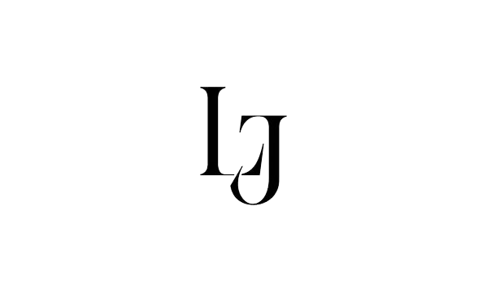
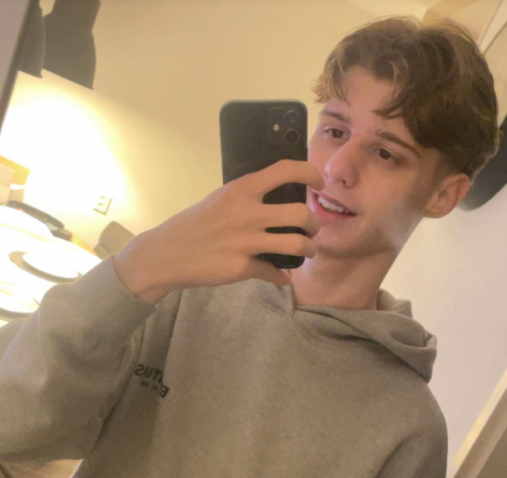
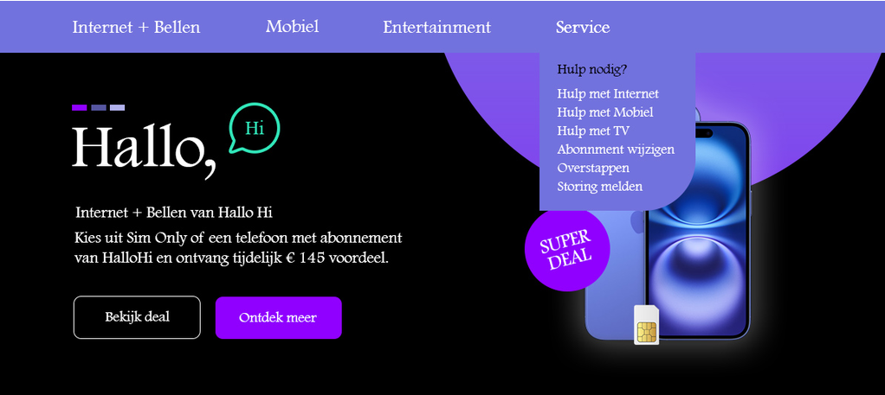
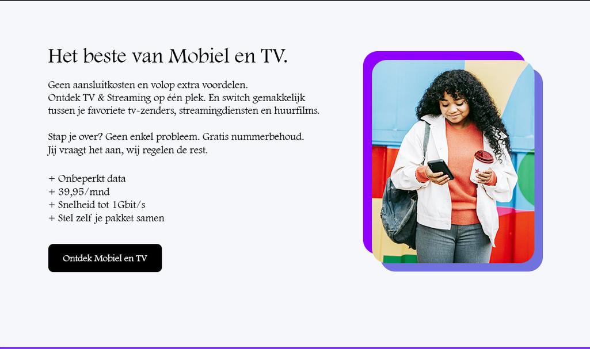

Software Developer, Techniek College Rotterdam Lars Janssen 17 Jaar Geboren in Schiedam.

Heb je vragen? Neem contact op!
Ik heb voor deze opleiding gekozen
Omdat ik altijd al van Computers hield
Ik hield en hou ervan om dingen te kraken, en eigen dingen te maken.
Ik denk de project waar we nu mee bezig zijn, in de projecten zoals deze kan je je skills laten zien van watje al weet.
Over 5 jaar zie ik mezelf een Muziekopleiding doen als ik deze heb afgerond. Ik hou altijd al van muziek en wil artiest worden dus de opleiding kan een goede keuze zijn
Dat je door het te leren alles kan maken wat je zelf wilt. Je zit niet vast aan iets zoals je kan maximaal dit doen Nee. Je kan alles doen wat je wilt en coderen kan voor alles handig zijn wat met online te maken hebt.
Als je echt van Computers houdt raad ik zeker weten deze opleiding aan het laat je zien wat er allemaal gebeurd en wat je allemaal kan.
Mijn goals van dit jaar zijn dat ik codeertalen beter leer en ze uiteindelijk goed kan gebruiken.
Ik wil vooral Javascript leren, dat is voor mij de leukste codeertaal en die wil ik het liefste leren.
Ik wil ook meer oefenen met coderen en zelf dingen maken, zodat ik er steeds beter in word.
Ook wil ik mijn eerste album uitbrengen. Muziek maken staat echt op nummer 1 voor mij en ik wil graag mijn eigen nummers met anderen delen.
Ik weet dat het veel werk is, maar ik ga mijn best doen om deze goals te halen.
Mijn Hobbies zijn muziek maken, Mijn favoriete artiest is Nine Vicious, Ik probeer dezelfde soort muziek te maken als hem
Sinds het begin is hij een inspiratie geweest, Door hem ben ik begonnen met muziek en doe ik het nogsteeds.
Mijn 2 favorieten nummers van hem zijn U Fancy en Riri, Die 2 heb ik ook gelinked als videos
| Gegeven | Informatie |
|---|---|
| Project | Hallo Hi, Website |
| Talen | HTML en CSS geleerd |
| Wat geleerd | Tekst, Code, kleuren en afbeeldingen toevoegen |
Voor dit project heb ik de website Hallo Hi nagemaakt.
Ik heb de voorbeelden gebruikt om te zien hoe de website eruit moest zien.
Daarna heb ik zelf de tekst, kleuren en afbeeldingen toegevoegd met HTML en CSS.
Ik vond het soms lastig, maar ik heb er veel van geleerd.

